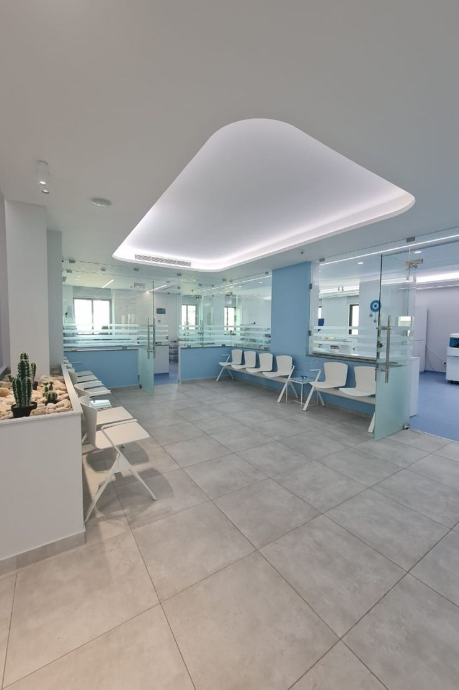
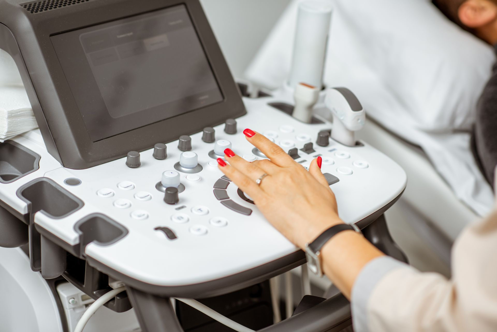
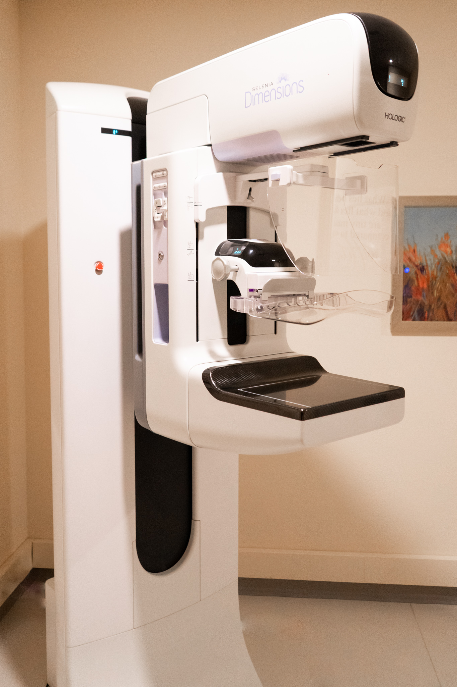
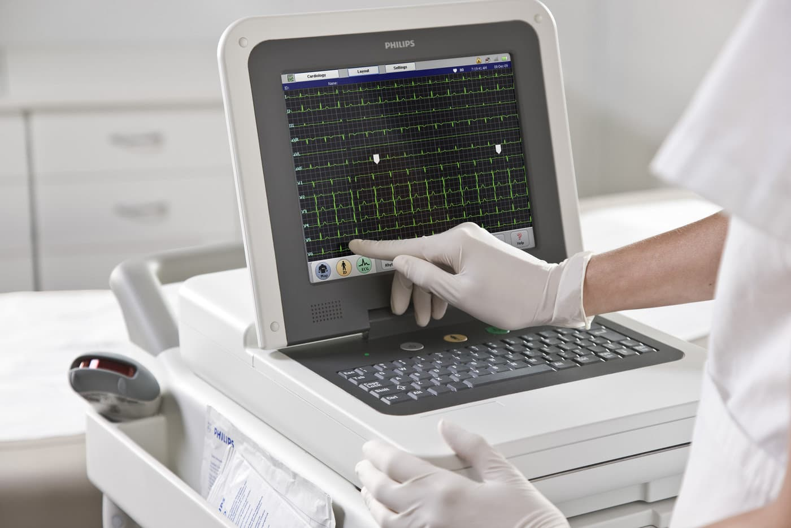
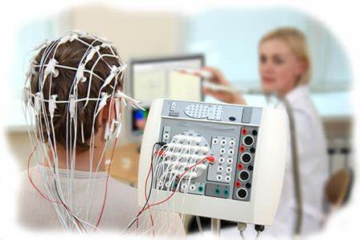

Va vom prezenta cateva fotografii din clinica noastra, menite a va ajuta sa vedeti conditiile la cele mai inalte standarde, precum si aparatura ultra perfomanta de care dispunem!📷

Interiorul clinicii HealthMed a fost realizat cu sprijinul celor mai priceputi arhitecti, pentru ca rezultatele sa fie pe masura inaltei calitati pe care ne dorim sa o promovam!

Clinica noastra este dotata cu aparatura pentru ecografii de cea mai inalta calitate,
pentru a face diagnosticarea oricarei afectiuni mult mai usoara si mai precisa!
Indemnam pacientii sa vina regulat la control si sa efectueze ori de cate ori este nevoie o ecografie,
ajutandu-i astfel sa isi monitorizeze starea de sanatate intr-un mod simplu dar sigur!

Stiati ca 2 din 10 paciente diagnosticate cu cancer mamar au sub 49 de ani?
Desi cele mai des intalnite cazuri se afla la femeile cu varsta cuprinsa intre 50-69 de ani,
numarul cazurilor creste ingrijorator si la femei sub 40 de ani.
De aceea, este important si absolut necesar controlul medical si efectuarea unei mamografii in fiecare an la femeile vulnerabile!!
La HealthMed pacientele noastre au parte de cel mai performant aparat de mamografie, cu o acuratete impecabila, ce le ajuta
sa depisteze din timp orice problema!

Pentru evaluarea cat mai sigura a patologiilor cardiace si miocardice, medicii nostri lucreaza cu cel mai calitativ aparat ce efectueaza electrocardiograme rapide, ce expun orice afectiune existenta cu o precizie ridicata. Este o procedura cheie, cu rol deosebit de important in monitorizarea activitatii inimii!

Asa cum bine se spune, "E mai bine sa previi decat sa tratezi", la aceasta clinica chiar se pune in practica!
Cu cea mai noua aparatura EEG, activitatea creierului este redata cu acuratete crescuta, astfel incat se pot observa
cu usurinta dezechilibrele, daca acestea exista!
De aceea, nu asteptati ca problema sa se agraveze, alegeti sa va controlati!